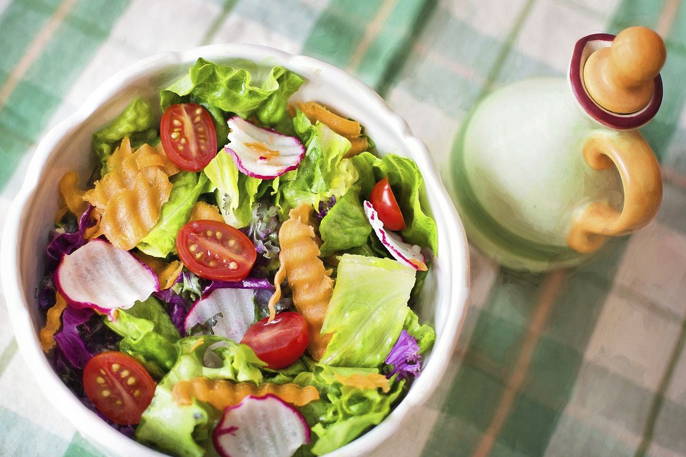

Simple Salad Recipe

Learn
how to make a simple, easy but flavourful salad for yourself!
Ingredients
- 2 hearts romaine lettuce
- 2 small plum tomatoes, diced
- 1 kirby cucumber or 1/4 european seedless cucmber, diced
- 1 small yellow onion or 1/2 red onion. chopped
- 1 carrot, peeled and shredded
- 1/4 cup extra virgin olive oil
- 2 to 3 tsps of red wine vinegar
- 1 tsp sugar
- coarse salt and black pepper
Instructions
-
Place salad greens in a salad bowl and top with tomatoes, cucumbers,
onion, and carrot. Place oil, vinegar and sugar in a small plastic
container. Put the lid on the container and shake dressing until sugar
dissolves, about 1 minute. Pour dressing over salad. Season salad with
salt and pepper, to taste, and toss to combine.
- Enjoy!